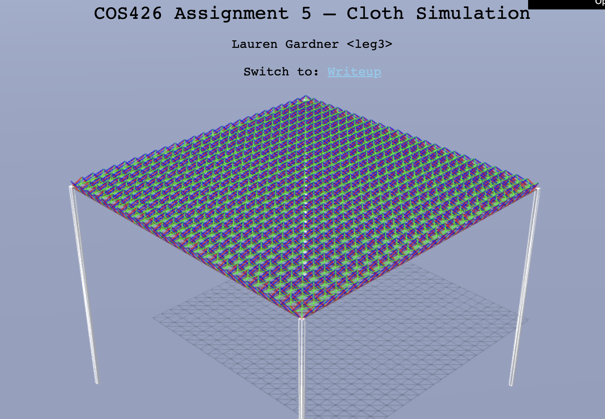
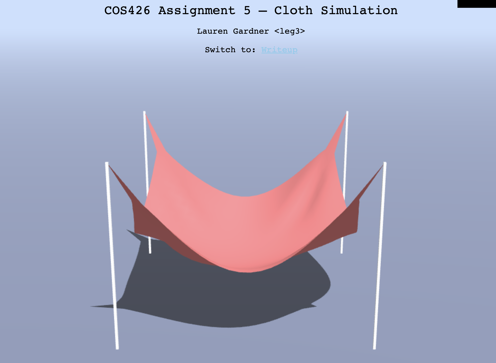
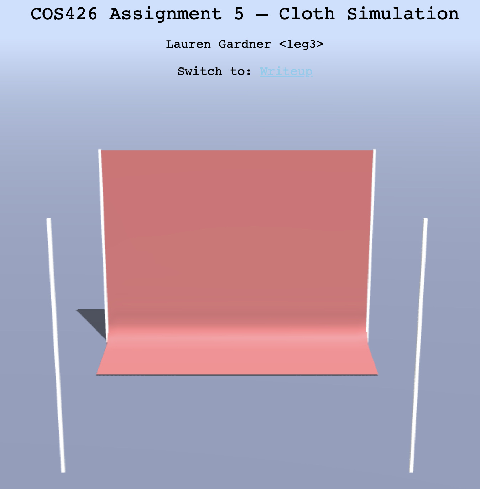
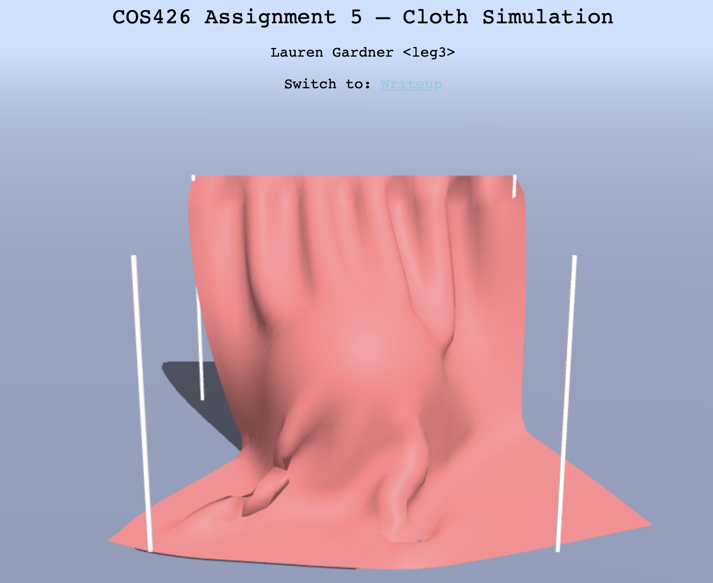
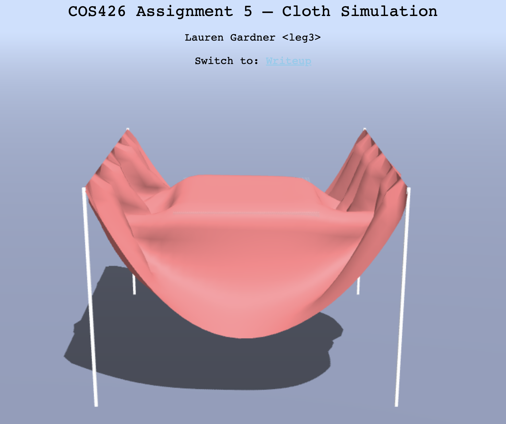
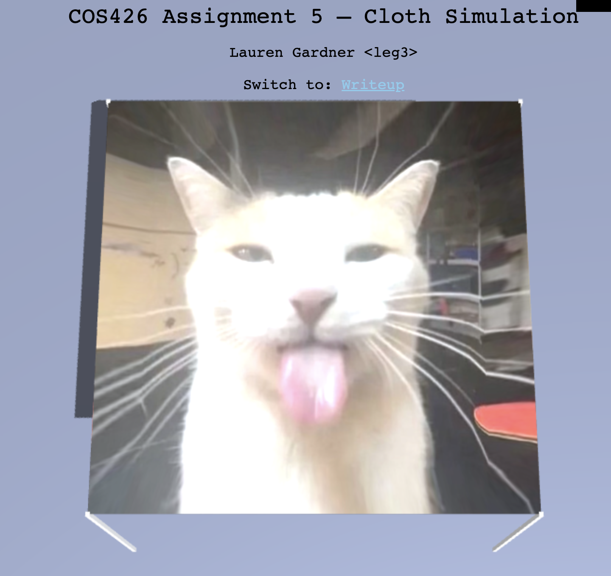

COS426 Assignment 5 Cloth Simulation — Writeup
Switch to: Simulation
that all images in this writeup were generated directly by my solution code or provided by the course staff (exception: art contest submissions may pass through intermediary software like GIMP)
that no other student has viewed my writeup explanations or my writeup images
that my solution code is my own work; particularly that my solution was not copied from any other student's solution code, and that no other student copied their solution directly code from me
that I did not discuss assignment specifics or view the solution code of any other student besides that of my (optional) partner
that I have followed all other course collaboration and course plagiarism policies as written on the course website.
Lauren Gardner leg3
Collaborated with: --
Late Days Used = 1
Table of Contents
- (0.5) Event listeners
- (1.0) Cloth
- (1.5) Constraints
- (1.0) Gravity
- (1.5) Verlet integration
- (0.5) Floor collision
- (1.5) Sphere collision
- (1.5) Box collision
- (1.0+) Extensions
- (1.0+) Art Contest
Event Listeners
Briefly describe your implementation of adding event listeners to the scene. In particular, list all of the keys that you have bound to an action, and briefly describe the action, as below:
- "ArrowUp": Move the looked-at particle upwards.
- "ArrowDown": Move the looked-at particle downwards.
- "ArrowLeft": Move the looked-at particle leftwards.
- "ArrowRight": Move the looked-at particle rightwards.
Cloth
Briefly describe your implementation of building the cloth out of particles and springs.
- Structural Springs: I took all points within the bounds of the cloth and attached the current point to itself and its neighbors one particle to the right and one particle down
- Shear Springs: I took all the points within the bounds of the cloth and attached the current point to itself and its diagonal pair.
- Bending Springs: I took all the particles within the bounds of the fabric and attached the current particle to itself and its neighbor 2 particles away to the right and downward.

Constraints
I found the vector between p2 and p1. I then normalized the vector and scaled it by the distance between p2 and p1 and the desired distance. I then adjusted the points by this corrective distance, subtracting it from p2s position and adding the correction to p1s position.
Gravity
I made a force vector for each particle and subtracted the accelaration of gravity multiplied with that particles mass to get the force value.

Verlet integration
Using the formula given for verlet integration, I calculated the velocity and acceleration based on the current possition, previous position, current netForce, and current mass. Using these calculations I was able to perform the integrations and update the position
Deliverable (click me): Please include an image of your cloth (not wireframe) with "Corners" pinned and no objects in the scene in its
final resting state, to demonstrate that your cloth updates its particle positions properly over time.
Floor collision
I first checked if the current particle was either on the ground y level or below with a given error allwance EPS. If the particle was below the ground y value, I reset the particles position to the position of the floor plus EPS
Deliverable (click me): Please include an image of your cloth (not wireframe) with "OneEdge" pinned and no objects in the scene in its
final resting state, to demonstrate that your cloth does not clip through the floor.

Sphere collision
Firstly, if the current particle is outside of the sphere it is returned unchanged. If the particle is within or touching the sphere the position was moved back to the nearest surface point of the sphere. if the previous point was ALSO within the sphere, an extra friction calculation was added to the position calculation without friction
Deliverable (click me): Please include an image of your cloth (not wireframe) with "OneEdge" pinned and the sphere object in the scene
in a resting state. Increase the size of the cloth to 700 so that it remains draped over the sphere.

Box collision
I checked the current position of each particle in relation to the box. If the particle was outside of the box I returned without alteration. If the point was within the box I checked how close it was to each face and snapped the particle back to the nearest side (using EPS as an error / give factor). Like with the sphere, if the previous particle position was also within the sphere I added a friction calculation and used a weighted sum of this friction calculation with the nonfriction calculation to get the final position
Deliverable (click me): Please include an image of your cloth (not wireframe) with "TwoEdges" pinned and the box object in the scene
in a resting state. Increase the size of the cloth to 700 so that it remains draped over the box.

Extensions
Briefly describe any extensions that you chose to complete. Please include images and/or videos as necessary so that we can see what you've done!
- Rain: I found a random particle on the cloth and moved its position downward based on the disclosed strength amount. The frequency of these raindrops is determined by the rate value
- Changing Winds: I used a scaled sin wave to adjust the wind strength based on the time / current frame number in the animation
- Custom Force: I applied a downward force to all particles in a diagonal from the top left corner to the bottom. Surrounding particles were also affected with a decreased strength.
Art contest
Briefly describe your submission to the art contest. Please include images and/or videos as
necessary so that we can see what you've done!
[leg3]
I love this silly goofy cat picture so I put it on my fabric :)
